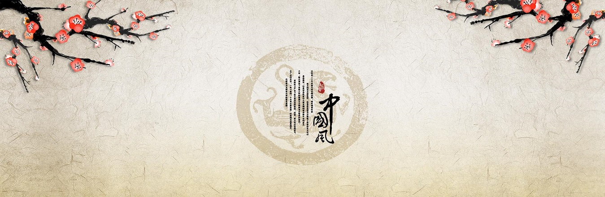
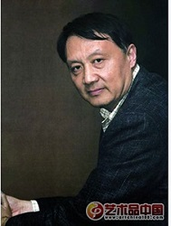
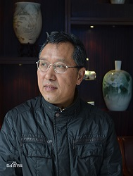
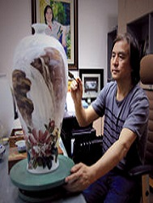
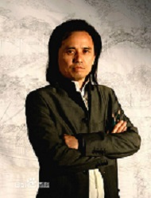
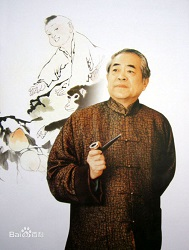

企业名人
TEAM

王明明
国家一级美术大师、北京市文化局党组成员、副局长，北京市美术家协会主席，中国美术家协会副主席、北京市美术系列高级职称评委会副主任、北京市人大代表。

徐建章
中国陶瓷艺术大师，1953年生，1975年毕业于湖南师大，同年入湖南省陶瓷研究所，现为湖南泰鑫瓷业誉窑艺术总监。高级工艺美术师，湖南水彩画研究会会员，中国陶协陶艺委员会常务理事。醴陵市第十二届人大代表，醴陵市第十二届政协委员。

赖德全
中国工艺美术大师，中国工艺美术学会高级会员，曾多次参加全国性比赛并获奖，其作品也被送往多个国家展出，并被其中一些艺术馆收藏。专业人士以及媒体都对其有着高度的评价。

黄小明
中国工艺美术大师、中国木雕艺术大师，非物质文化遗产“东阳木雕”代表性传承人，最具开创性和创新性的代表人物，被誉为业界的“金手指”，已有70余件作品获奖。
戴玉梅
景德镇市高级工艺美术师，中国陶瓷艺术大师，江西省工艺美术大师。其作品清新淡雅、具有女陶艺家们满怀时代的激情,女性生命个体的幽雅、细腻、浪漫、坚韧的自然属性造就了女性陶艺家的当代素质与品格。

范曾
中国当代大儒、思想家、国学大师、书画巨匠、文学家、诗人。现为北京大学中国画法研究院院长、讲席教授，中国艺术研究院终身研究员。是当代中国集诗书画、文史哲、儒释道于一身的文化大家，平生著作等身，已出版一百六十余种诗、书画、哲学之著述，国家图书馆珍藏其中119种。
版权所有 © 2018 Sheng Tang . 盛唐中国原创工艺品网站